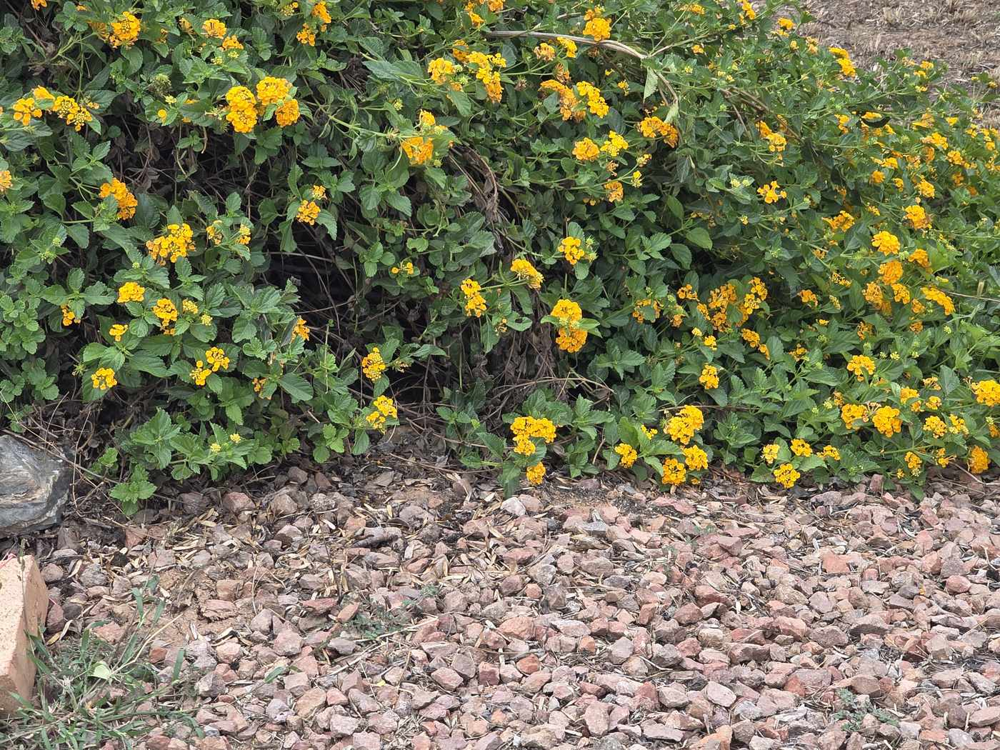
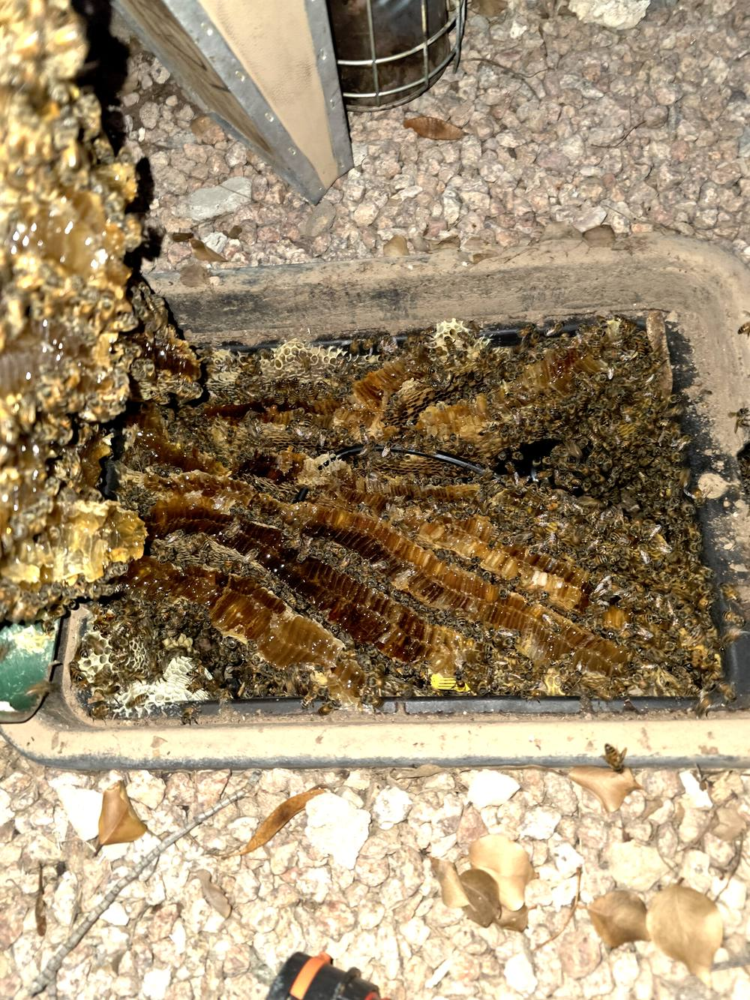
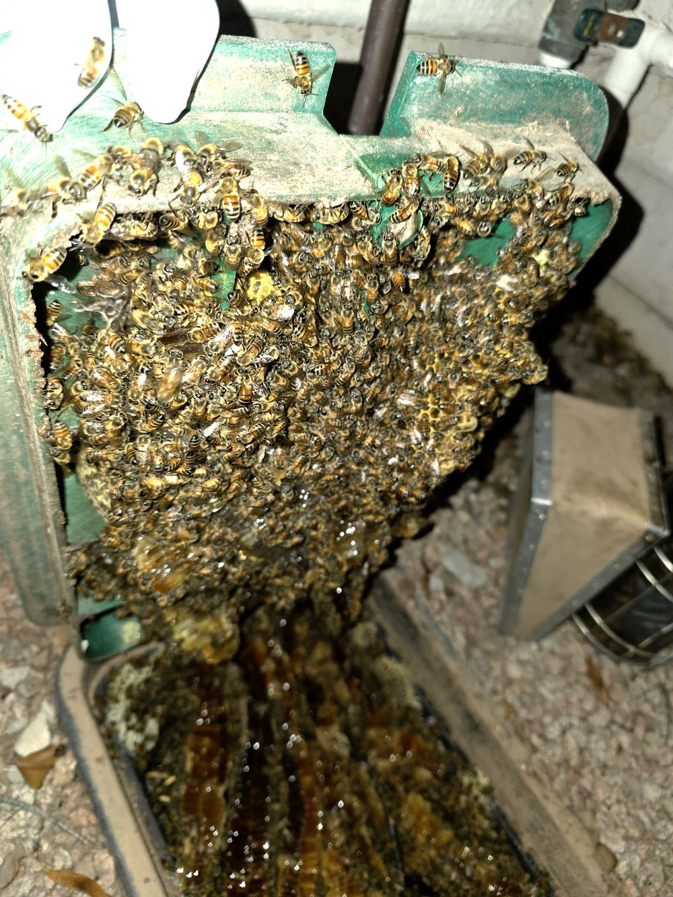
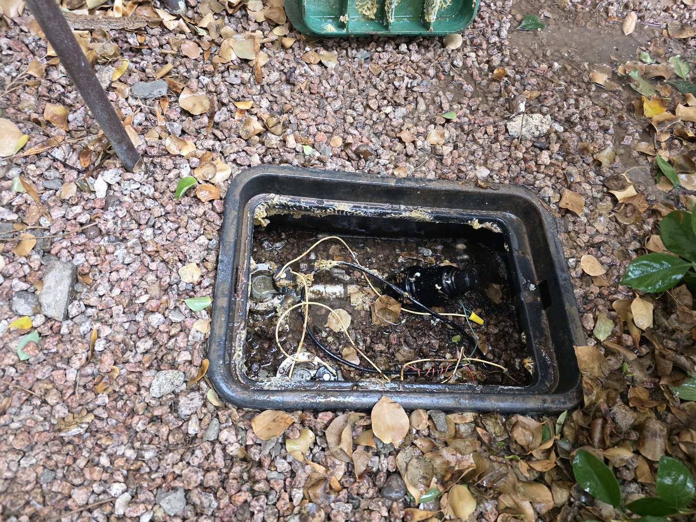

Bees in Your Irrigation or Water Meter Box? Here’s What to Do
October 2026 · Bee removal · Gilbert & the East Valley
Last week I pulled a full honeybee colony out of an irrigation box here in Gilbert. Comb was built right onto the lid and packed down inside the box. It’s one of the most common places I find bees around the East Valley, so here’s what every homeowner should know.

Why bees pick irrigation and meter boxes
A swarm looking for a new home wants a dark, sheltered cavity that stays out of the wind and sun. An in-ground irrigation valve box or water meter box checks every box: it’s shaded, protected, and close to water. Once they move in, they start building comb fast.


Signs you have a colony
- Steady bee traffic in and out of the lid or a gap at the edge of the box
- A humming or buzzing sound when you get close
- Bees getting defensive when you mow, water, or walk nearby
What not to do
Don’t pop the lid to take a look, and don’t seal the box shut or spray it. Sealing bees in doesn’t solve the problem, and the comb and honey left behind can attract a new swarm or other pests. Keep kids and pets away from the area until it’s handled.
How we handle it
I’m a beekeeper as well as a handyman, so when it’s practical I do a live removal and relocate the bees instead of killing them. Then I clear out the comb so a new swarm isn’t drawn right back to the same spot. If the bees were in a wall, eave, or attic, we can patch the drywall and seal up the entry point on the same job.

Hear buzzing at your meter box, valve box, wall, or attic? Call (480) 570-6021 or request a quote. You can also read more about our bee removal and repair service.